Atendimento humanizado
Cuidado individualizado para cada pet e família, promovendo bem-estar em todas as fases da vida.
Clínica veterinária
Medicina veterinária de excelência, tecnologia e cuidado para acompanhar seu pet em todas as fases da vida.
Sobre a Dog's Company
Uma experiência veterinária que une acolhimento, tecnologia e atenção a cada necessidade do paciente.
Cuidado integrado
Consultas, diagnóstico, internação, cirurgia, especialidades, Banho & Tosa e cuidados complementares.
Cuidado completo em um só lugar
Clique em uma área para ver os serviços disponíveis.
Consultas, prevenção e vacinação.
Ver serviços +Exames laboratoriais e de imagem para apoiar a avaliação do seu pet.
Ver serviços +Estrutura para tratamentos e monitoramento.
Ver serviços +Bem-estar e qualidade de vida.
Ver serviços +Fale com nossa equipe para entender a melhor opção de cuidado.
Banho & Tosa Dog's Company
Um momento de cuidado, relaxamento e bem-estar para o seu melhor amigo.
Produtos profissionais e água na temperatura ideal.
Técnicas que respeitam a raça e o estilo.
Cuidados especiais para pele e pelagem.
Ambiente tranquilo e profissionais preparados.
Conforto em todas as estações.
Shampoos e condicionadores de qualidade.
Profissionais treinados.
Protocolos para o bem-estar do pet.
A confiança de quem mais importa
A experiência de quem confia na Dog's Company.
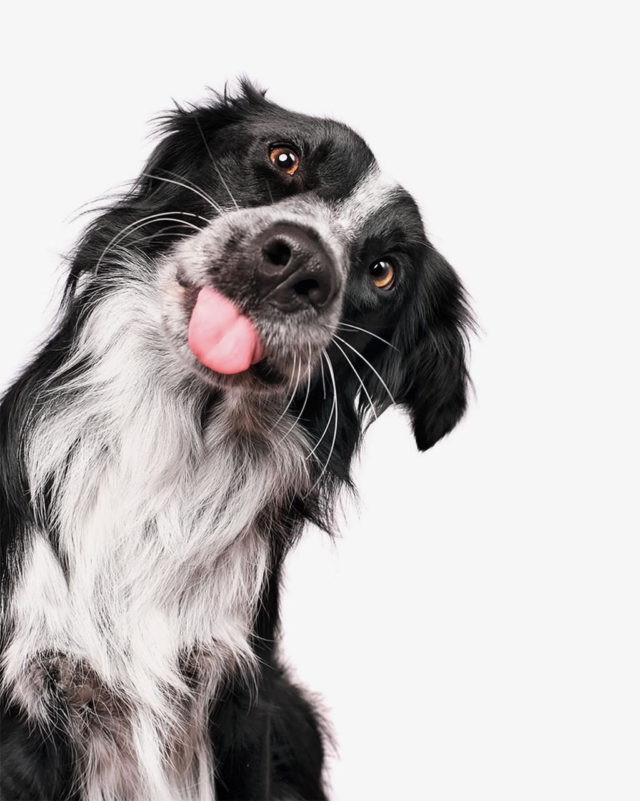
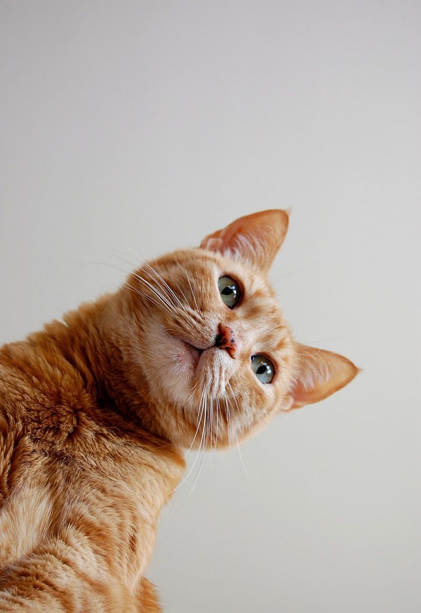
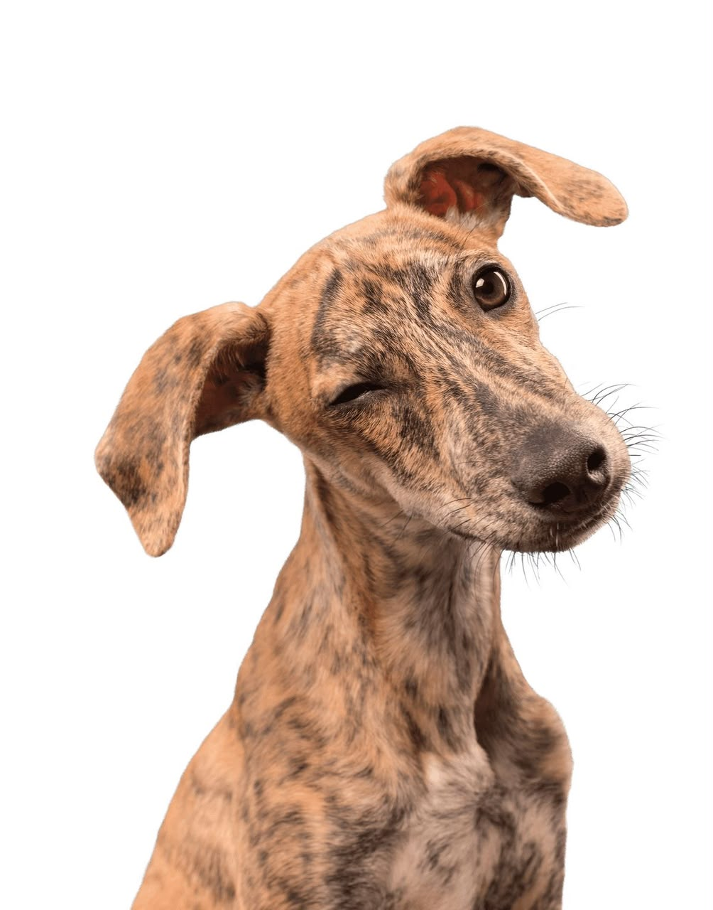
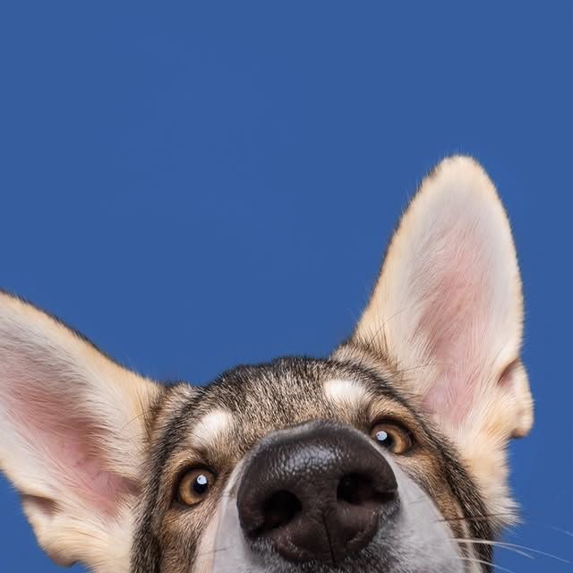
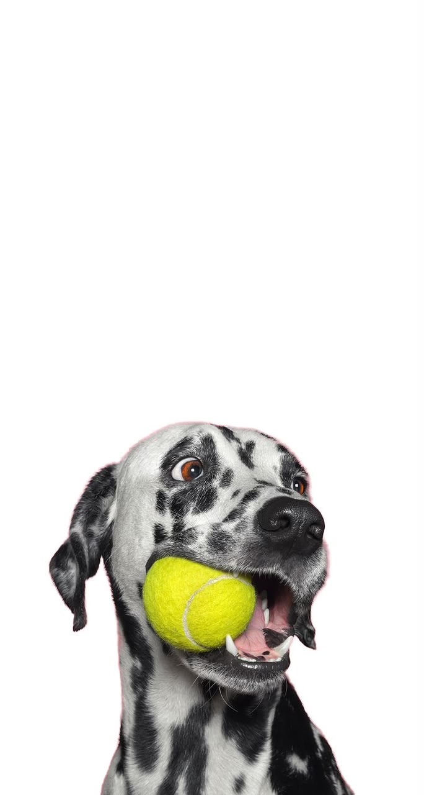
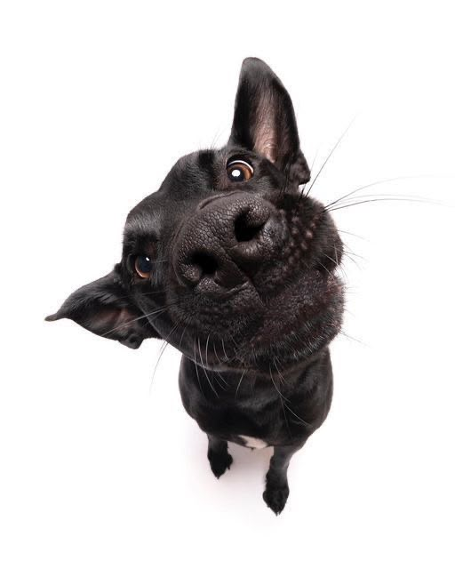
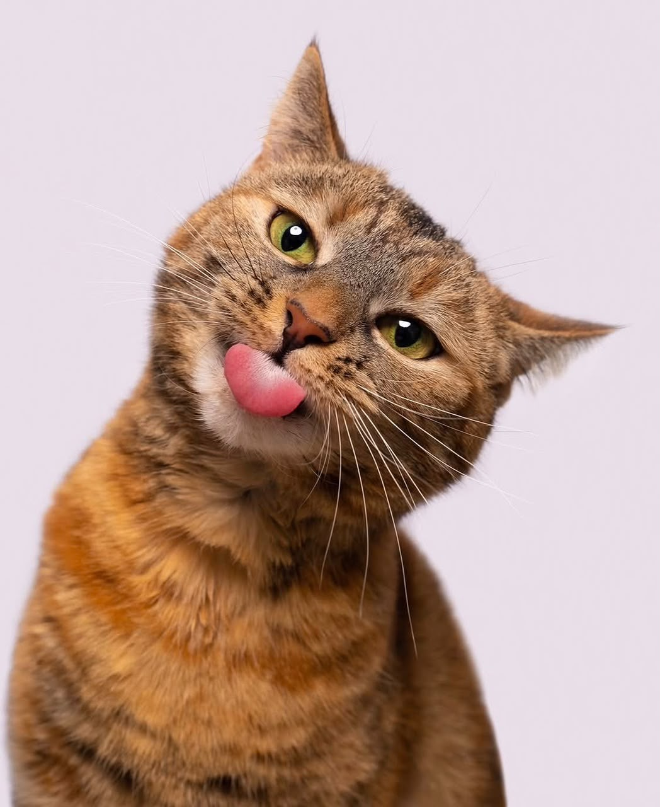
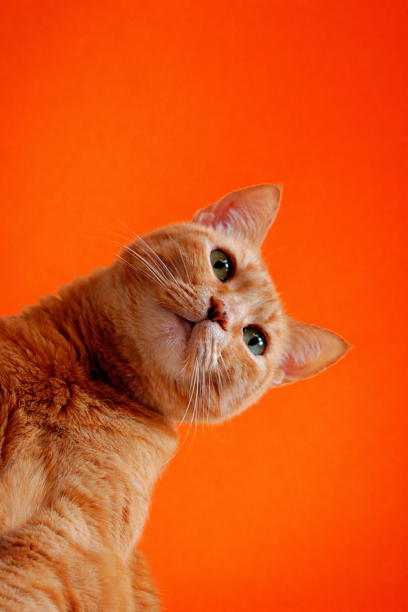
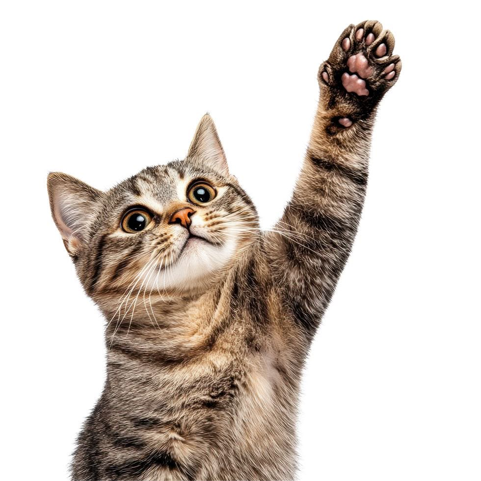
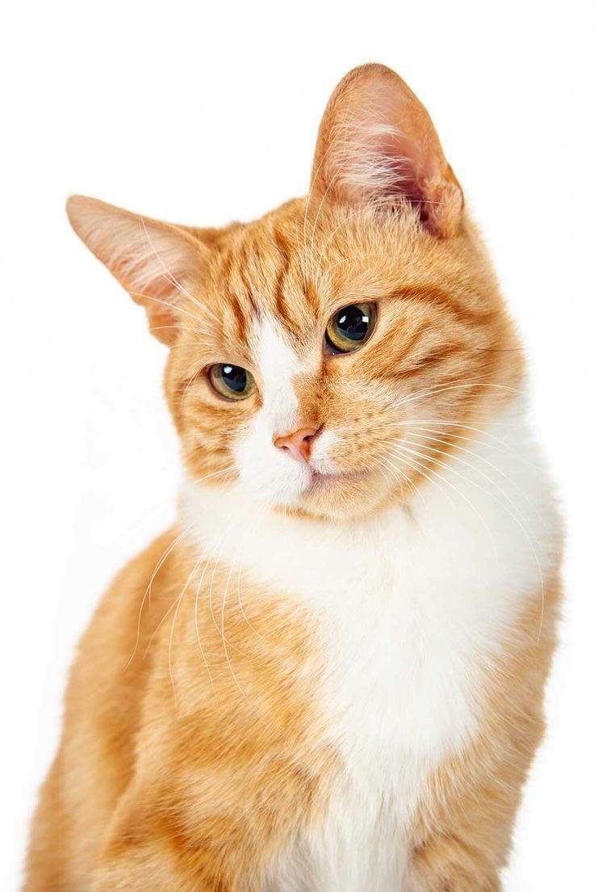
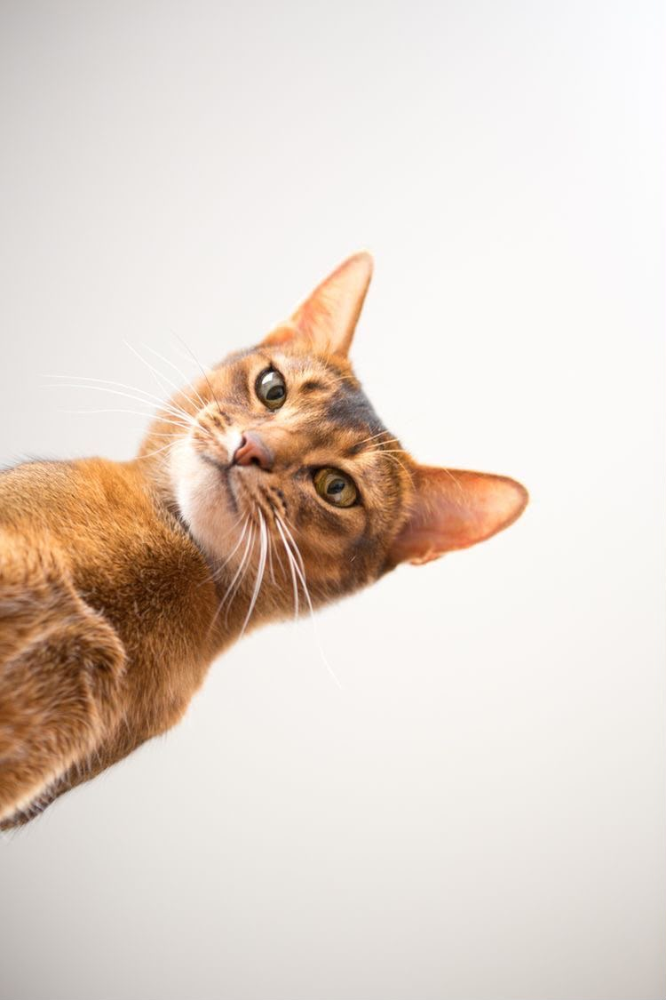
Cuidado em cada etapa
Profissionais preparados para acompanhar diferentes necessidades clínicas.
Disponibilidade para cuidar quando seu pet precisar.
Da prevenção ao tratamento, em todas as fases da vida.